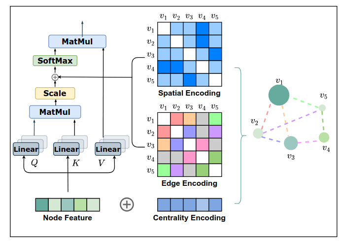
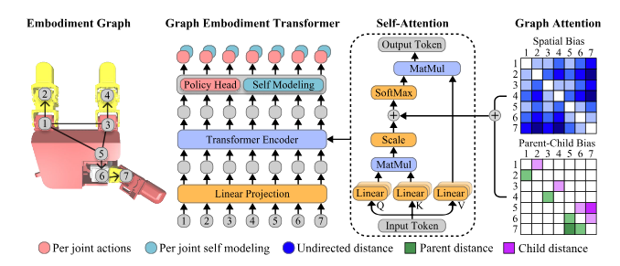

One really wonderful property for a generalist robotics model to have would be for it to generalize across embodiments. There are two main reasons for this:
- If, as a roboticist, you want to deploy to new hardware, it is obviously preferable to just copy the same model over and be done, rather than laboriously training a new foundation model from scratch
- It will typically be possible to train a model that’s supposed to generalize across embodiments on data collected from multiple embodiments. This opens the door to doing something like downloading lots of YouTube videos of humans and using human pose detection (maybe with a little bit of motion retargeting) to present those videos as training samples of a humanoid robot morphology.
A truly general cross-embodiment model (one that is capable of zero-shot generalization to novel embodiments) requires some way to represent the embodiment it’s currently using. This is a tricky problem! I’ll briefly digress to mention that the words “embodiment” and “morphology” mean very similar but distinct things in robotics. Generally, ’embodiment’ can be used to refer to virtually any aspect of the mechanical design of a robot, whereas ‘morphology’ refers only to the kinematic aspects like link geometries and joint types. So for instance, rubber being applied to a gripper to make it more frictive is part of the embodiment, but not part of the morphology. When most robotics papers talk about ‘generalizing across embodiments’, as of 2025, they are being aspirational. Currently, we would very much like to generalize well across morphologies. To do this, a nice starting point would be able to take in a kinematic graph and output joint-space commands to perform some task using the morphology that graph represents.
The most natural way to do ML on graphs is using graph neural networks (GNNs). However, GNNs have the downside that they typically use techniques that provide greater weight to relationships between nodes that are adjacent in the graph. In a robot morphology, we should expect the opposite: in a robotic arm, for instance, angular motion in the base joint will produce much more linear motion in the end effector than the same amount of angular motion in the wrist joint. It might be possible to partially overcome this weakness by explicitly adding ‘descendant’ edges to the kinematic graph, but this still doesn’t learn to weight distant ancestors more.
Ideally, we could use some technique that can learn to attend to distant pairs of joints appropriately. GET-Zero does this with transformers, building on the concepts introduced in the Graphormers paper but specializing the bias matrices that Graphormer uses for features more relevant to kinematic trees (specifically, the graph distance between all pairs of joints and the ‘parent-child distances,’ or number of edges between all ancestor-descendant pairs). GET-Zero then shows that this robotics graphormer architecture is capable of zero-shot generalization to novel morphologies for an in-hand rotation task.
Side note: in some ways, in-hand rotation is an excellent task to evaluate, because hands have a branching kinematic tree that challenges the network to learn to coordinate multiple sequential chains. On the other hand (haha), the motion required to successfully rotate an object (especially a simple object like a cube) in-hand is a very simple periodic motion for each finger.
If you’re not familiar with Graphormers, here’s the key image:

They introduce a variant of the transformer architecture that biases the attention mechanism with the ‘spatial encoding’ and ’edge encoding’ of the graph, and they show that this architecture’s representative power supersets that of message-passing GNNs. All GET-Zero does is swap out ‘graphs’ in the abstract for kinematic graphs specifically, and use this to train a policy:

They also have a ‘self-modeling’ loss, which just means they add an auxiliary task where they try to predict the forward kinematics output for the current hand pose.
One thing that immediately jumped out to me about this was: this loses information about joint lengths. The ‘spatial bias’ being computed gives the distance in number of edges (equivalently: number of links between a pair of joints), not in physical units like meters. You can see this in the code here. In the in-hand rotation task, this may not produce bad outcomes, because all links in the hand happen to be about the same length. But in a humanoid robot, which has both fingers and legs, I would expect this to work much worse.
One possible fix I thought up was to instead bias with some variant of the Jacobian matrix. For those not coming from robotics, the “Jacobian matrix of a robot” is shorthand for “the Jacobian matrix of the forward kinematics of the robot’s end effector.” It is a 3xn matrix, where n is the number of degrees of freedom, and multiplying a robot’s current joint velocities by the Jacobian gives the Cartesian velocities of the robot’s end effector (actually, sometimes it’s 6xn and also gives angular velocities, but we’ll keep things simple here). The Jacobian matrix is not constant for a given robot, obviously: it depends on the robot’s state.
The problem to solve with using the Jacobian is that it’s the wrong shape: the bias matrices need to be nxn. But we can solve this by taking the Jacobian of every joint, giving us n matrices of shape 3xn. We can then reorder them into what I’ll cautiously call the “Cartesian influence matrices”, which are three nxn matrices which, when multiplied by the joint velocity vector, give the x, y, and z velocities of each robot joint, respectively. If you take the 2-norm of the vector of three Cartesian influence values for a given pair of joints, you get a scalar value describing how much motion, in Cartesian space, will be produced in joint $j$ by motion in joint $i$. A matrix of such values is nxn!
The other, and probably more significant, problem with using Jacobians is that you have to re-compute the Jacobians at every step. But I thought I would try it anyway, and implemented my own variant of GET-Zero, which I’m calling GET-Zero-J (J for Jacobian). Recomputing the Jacobians every time did slow down the training substantially, but at the end I got very slightly better generalization to unseen morphologies: 0.16 rad/s rotation speed for morphologies with new link lengths and connectivities vs 0.145 rad/s baseline, or almost exactly a 10% improvement. Rotation speed was almost exactly the same in the overall average (0.249 rad/s vs 0.246 rad/s baseline), suggesting that my critique of GET-Zero and proposed solution might be correct. I’d like to run it on a morphology with more variation in link lengths, but I’ve gotten busy and unfortunately robotics code is not as modular and interoperable as everyone would like it to be.
This project was much larger in scope than I normally do, but it was lots of fun, and I really enjoyed getting to see videos of my policy rotating blocks in simulation. You can also see some interesting cases where the simulator messed up and snapped the block into a new position - there were a reasonable number of these, but not enough that it seemed like the policy was learning to do it as a strategy:
I’d like to give a shoutout to Austin Patel, the author of GET-Zero, for making his work open-source and packaging it in a dev container that made it easy to run. If you’re interested in GET-Zero-J, it’s available on my GitHub here: https://github.com/sscheele/get-zero-j.